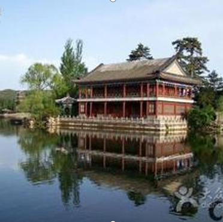
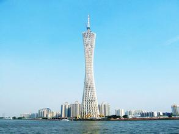

Guangzhou is in the south and one of the largest cities of China.The third longest river,Zhujiang River,runs through the city.The Weather in Guangzhou is different from that of many cities in the north.It is warm in winter and quite hot in summer with lot of rains in spring and summer.There are many interesting places in the city worth seeing,such as the statue of five goats,Guangzhou tower,Guangdong Museum and Baiyun Mountain.
Yuexiu Park is the largest park in downtown Guangzhou. Covering an area of 860,000 square meters (212.5 acres), it is made up of three artificial lakes and seven hills of Yuexiu Mountain; hence the name.

The main places of interest include the stone sculpture of the Five Rams, Zhenhai Tower, the site of the Ming Dynasty City Wall, and Square Cannon Site.
Baiyun Mountain (known locally as White Clouds Mountain) is located in north of Guangzhou city. It is named "the most beautiful place in the "Sheep City" (the nick name of Guangzhou City is "Sheep City")". It is also one of the first 4A Grade interest places in China
The Pear River is the mother river of Guangzhou. The Pearl River has a length of more than 2,000 kilometers (about 1243 miles) and is the third longest river in China.

Canton Tower, also known as Guangzhou TV and Sightseeing Tower, is a tower near Chigang Pagoda, Haizhu District, Guangzhou, Guangdong. It is one of the world’s most spectacular new buildings, which was topped-out in 2009 and became operational in 2010.
An exciting day with your friends and family awaits at Chimelong Paradise in Guangzhou. With an overwhelming number of attractions for all ages, stunt shows, 4D movies and parades, there is something to do for everyone, just take your pick and enjoy! Aside from that, there are several themed restaurants featuring a fusion of food from all over the world. And for the shopaholics, don't worry, Chimelong Paradise has got you covered with dozens of shops you can choose from. So what are you waiting for? And when you're finished at the theme park, Guangzhou Chimelong Resort has an abundance of other parks and attractions for you to check out! An afternoon at the largest amusement park in China is an afternoon well spent!
Back to top